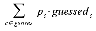
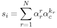
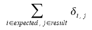
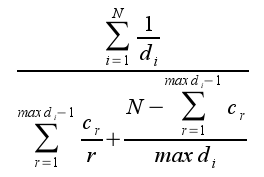

|
ISMIR2004 Audio Description
Contest - Genre/ Artist ID Classification and Artist Similarity
Purpose
Compare algorithms for music classification and similarity. The contest is divided into three subcontests. Participants may choose to participate in any or all of them.
- Genre classification
- Artist identification
- Artist similarity
General Issues
- Participants should send us their postal adress so that
we can distribute the data.
- A framework is provided to allow the participants to simulate an evaluation
environment like the one that will be used during the final evaluation.
- We accept algorithms and systems that make use of
external frameworks such as Weka, HTK, Torch and so on as long as they run on GNU/Linux.
- We have proposed, based on literature and feedback from
researchers, a set of evaluation metrics that determine the
winner. Should something inexpected occur, we leave the door
open to redefine the winner after a vote by the community.
- Contestants can cancel their participation.
- Contestants may decide not to make their results public. Anonymity will be rigourously preserved.
- The audio content cannot always be distributed due to copyright
licenses. We will compute and deliver low level descriptors of the music
tracks as proposed in [1]. In order to allow participants
to start preparing and testing, MFCC are already included in the distribution DVD.
- Low level descriptors of the training/evaluation data can
be computed at our lab and delivered to the participants up
to 3 times.
Important dates
| June
28 |
Final
definition of the contest rules |
| July 15 |
Tuning data made available
to participants |
| September
7
|
Deadline
for participant submission of the algorithms
(participation can be cancelled) |
| October 10-14
|
Publication of the results
of the tests. Prizes (to be defined) will be
delivered during the ISMIR 2004 conference in
Barcelona |
>> back to top
Genre classification
The task is to classify songs into genres like Magnatune has organized its site. Magnatune is an example
of a customer that would benefit from MIR tools.
Moreover, its licensing scheme allow the use of the audio content for research.
Training and development set
A training and a development set will be mailed to participants.
The training and development set consist each of:
- classical: 320 samples.
- electronic: 115 samples
- jazz_blues: 26 samples
- metal_punk: 45 samples
- rock_pop: 101 samples
- world: 122 samples
Data for participants
-
training/genres.txt: list of all genres (classes)
-
training/tracklist.csv: list of all tracks with
metadata (genre, artist, album,
track title, tracknumber, filename) in CSV format
- development/tracklist.csv:
anonymous list for development as used later for
evaluation
- development/ground_truth.cvs:
mapping of tracks to genre (eg.:
"tracks/artist_1_album_1_track_1.mp3","classical")
- development/tracks/*.mp3: audio files in mp3 format
- training set: part1
part2
(LARGE FILES!)
- development set: part1
part2
(LARGE FILES!)
Test set
The evaluation set will not be distributed and consists
of:
~ 700 tracks in the genres (classes) mentioned above
with a similar distribution.
Evaluation metric
The evaluation corresponds to the accuracy of correctly guessed
genres. 
The samples per class are not equidistributed. The evaluation
metric normalizes the number of correctly predicted genres
by the probability of appearance of each genre (P_c).
Artist Identification
The task is artist identification given three songs after
training the system on 7 songs per artist.
Training and Development set
Low-level features corresponding to songs of 105 artists from
uspop2002 [1-3].
The training set includes 7 songs from each
artist and the development 3 songs.
Data for participants
-
training/tracklist.csv: list of all tracks with metadata
(artist, album, track
title, tracknumber, filename) in CSV format
- training/artists.txt:
list of all artists
- training/tracks/<artist>/<album>/<num>-<track
title>: mfc values for each track
- development/tracklist.csv:
anonymous list for development as used later for
evaluation
- development/tracklist_realnames.csv:
all metadata for the development tracks
- development/ground_truth.csv:
mapping of anonymous name to real artist names (eg."artist_1",,"aretha_franklin")
- development/tracks/*.mfc: mfc values for each track
- artist ID/similarity set: part1
part2
(LARGE FILES!)
Test set
~ 200 artists not present in uspop2002 (7 songs for
training, 3 songs for evaluation).
Evaluation metric
Accuracy = number Of Correctly Identified Artists/Total
>> back to top
Artist Similarity
The task is building a system that proposes
similar artists like the experts of All Music Guide
do.
Training and Development set
105 artist from uspop2002 [1-3], each represented by 10 songs, divided in a training set of 53 artist
and a development set of 52 artists.
Data for participants
- training/artists.txt:
list of artist names - training/tracklist.csv: list of all
tracks with metadata (artist, album, track title, tracknumber,
filename) in CSV format.
- training/tracklist.csv:
list of all tracks with metadata (artist, album, track title,
tracknumber, filename) in CSV format
- training/tracks/artist/album/num-track title="".mfc:
mfc coefficients for each track.
- development/artists.txt:
list of artist names
- development/tracklist.csv:
list of all tracks with metadata (artist, album, track title,
tracknumber, filename) in CSV format
- development/tracks/artist/album/num-track title="".mfc:
mfc coefficients for each track
- artist similarity data set (same as in artist
ID)
Test set
~ 200 artists not included in uspop2002 (100 for training and a 100 for evaluation).
Evaluation metric
The goodness of the agreement between the automatic
recomendations and the expert opinions will be assessed by
different metrics against a similarity matrix derived as described
in [1-3].
The expert
matrix of this contest differs slightly to the one
of [1-3] because it was derived using a different set of artists. There
are 105 artist that appear in both sets. We have compared
the agreement on the overlapping submatrices and we found
a top-10 rank agreement of 0.345 (averaged on 10 runs) using
topNrankagree.m (see [1] and [3]) between our AMG (expert
allmusicguide derived data) and the one of [1-3]. Using the
matrix of [1-3] as ground truth the agreement is 0.255.
The following formulae will be used for the evaluation of the
recommendations. The exact implementation of the evaluations can be found in
the framework.
- TopNrankagree: see [1-3]

where si is the score for artist i, N is how
many similar artists are considered in each case (10),
r is the `decay constant' for the reference ranking
(0.50^.33), c is the decay constant for the candidate
ranking (0.50^.67), and k_r is the rank under the
candidate measure of the artist ranked r under
the reference measure.
- Overlap: Measures the number of common artist among
the 10 best recomendations of the automatic system and
the expert's opinion.

- MTG distance

where d(i) represents the distance from the original
artist to the result ranked i by the system, and c(r)
represents the cardinal of all artists at distance r
from the original one.
>> back to top
Framework
The testing framework is composed of python scripts that will
take care of the administrative tasks inherent to running
batches of tests. The user just has to plug-in his algorithms
in a simple interface to be able to run tests and evaluate
a system.
The framework can be downloaded from here
It is still in development so any suggestions or contributions
are welcome.
>> back to top
Features
For the development and test there are features corresponding
to Mel Frequency Cepstrum Coefficients extracted using
the HTK Hidden Markov Model Toolkit available from http://htk.eng.cam.ac.uk/.
We used the following settings for the MFCC extraction.
HCopy 3.1 CUED 16/01/02 : $Id: HCopy.c,v 1.6 2002/01/16
8:11:29 ge204 Exp $
The files can be read with the HList utility from the
HTK toolkit.
SOURCEKIND = WAVEFORM
SOURCEFORMAT = WAV
SOURCERATE = 454 #22050 Hz sampling rate
TARGETKIND = MFCC_E_D #MFCC + Energy + Delta
TARGETFORMAT = HTK
TARGETRATE = 150000 #15ms frame rate
SAVECOMPRESSED = FALSE
SAVEWITHCRC = FALSE
ZMEANSOURCE = FALSE
WINDOWSIZE = 300000.0 # 30ms window size
USEHAMMING = TRUE # Hamming window
PREEMCOEF = 0.95 # Pre-emphasis
NUMCHANS = 40 # Number of filter banks
NUMCEPS = 20 # Number of MFCC
CEPLIFTER = 20 # Use of Cepstral Filter
LOFREQ = -1
HIFREQ = -1
ENORMALISE = FALSE
ESCALE = 1
>> back to top
[1] Berenzweig, Adam, Daniel Ellis, Beth Logan, Brian Whitman.
"A Large
Scale Evaluation of Acoustic and Subjective Music Similarity
Measures."
In Proceedings of the 2003 International Symposium on Music
Information
Retrieval. 26-30 October 2003, Baltimore, MD.[ paper PDF
http://web.media.mit.edu/%7Ebwhitman/ismir03-sim.pdf
]
[2] Ellis, Daniel, Brian Whitman, Adam Berenzweig and Steve
Lawrence.
"The Quest For Ground Truth in Musical Artist Similarity."
In
Proceedings of the 3rd International Conference on Music Information
Retrieval. 13-17 October 2002, Paris, France. [ paper PDF
http://web.media.mit.edu/%7Ebwhitman/ellis02quest.pdf
| talk PDF
http://www.ee.columbia.edu/%7Edpwe/talks/ismir-2002-10.pdf
]
[3] http://www.ee.columbia.edu/~dpwe/research/musicsim/
>> back to top
|